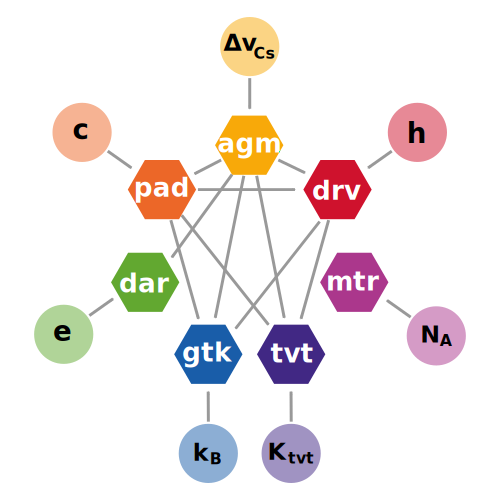

Shastadari is a system of Prefixes and Units of Measurement based on the same physical constants as the International System of Units, known as the SI, from it’s original French name “Système international d’unités”, with the following differences:
- 1st, values are expressed using base six (sezimal) instead of base ten (decimal);
- 2nd, the base unit of time is the agrima instead of the second, and, since the agrima is 1.504 1.8̅5̅1̅ times bigger than the second, all units adjust accordingly;
- 3rd, in order to mark the difference of both the time unit and the base used, the names of the prefixes and units are inspired in Sanskrit, instead of Latin or Greek, or names of people, like in the SI; hence, Shastadari, which means Sezimal, in steps of six, in Sanskrit (see in the Appendix – Names, the original words in Sanskrit, their original pronunciation and meaning, and how we used them);
- 4th, prefixes are not limited to a pre-determined set, but are constructed from the exponents themselves, through a series of regular affixes;
With that in mind, Shastadari comprises a coherent system of units of measurement, that starts with 11 7 base units, which are:
- 1. the agrima, the unit of time (symbol agm), defined based on the hyperfine transition frenquency of Cs ΔνCs;
- 2. the pada, the unit of length (symbol pd), based on the speed of light c and the agrima;
- 3. the dravya, the unit of mass (symbol drv), based on the Planck constant h, the pada and the agrima;
- 4. the dara, the unit of electric current (symbol dr), based on the elementary charge e and the agrima;
- 5. the gatika, the unit of thermodynamic temperature (symbol gtk), based on the Boltzmann constant kB, the dravya, the pada and the agrima;
- 10. the matra, the unit of amount of substance (symbol mtr), based on the Avogadro constant NA;
- 11. the tivrata, the unit of luminous intensity (symbol tvt), based on the luminous efficacy of 2.5121 0310 5104 TSvrt, the dravya, the pada and the agrima;
